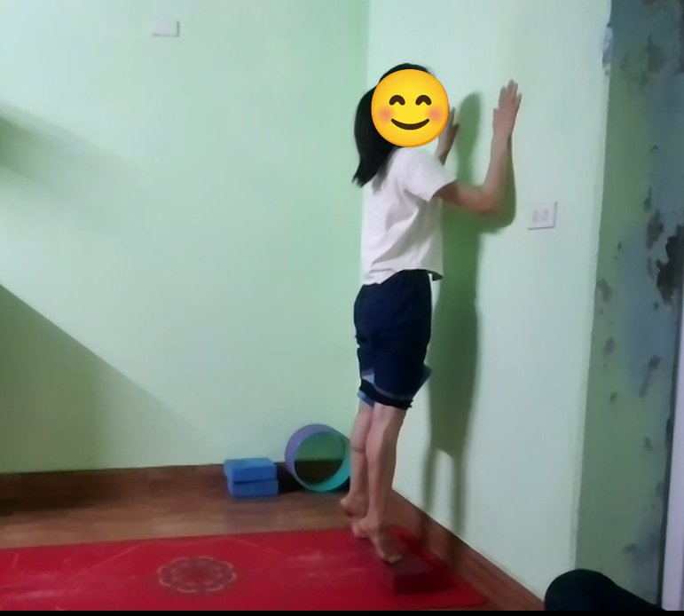

Yoga người lớn · Yoga cân bằng phục hồi
Yoga cân bằng phục hồi cho người rối loạn tiền đình, say xe, chóng mặt khi đổi tư thế
Đang nằm, ngồi dậy hơi nhanh, cả căn phòng quay một vòng. Lên ô tô mười phút đã nôn nao. Cúi xuống nhặt cái khăn, đứng lên thì mắt tối sầm, phải vịn vào tường.
Có một chị đăng ký học yoga nhưng nhắn trước cho Sophia: “Em bị tiền đình, cô ạ. Em sợ mấy tư thế cúi đầu lắm.”
Buổi đầu, chị ngồi trên ghế. Không cúi, không xoay, không nằm xuống đứng lên. Chỉ ngồi thẳng, thở, mắt nhìn vào một chấm nhỏ cô dán trên tường. Rồi đứng dậy, hai tay vịn tường, chuyển sức nặng từ chân này sang chân kia, thật chậm.
Cuối buổi chị bảo: “Lần đầu tiên em tập mà không thấy chao đảo.”
Với người tiền đình yếu, đôi khi tập ít lại, chậm lại, mới chính là tập đúng.
Câu chuyện được kể lại từ nhiều học viên có cùng vấn đề, đã đổi chi tiết để giữ riêng tư.
Bài này Sophia viết cho những người hay chóng mặt, say xe, buồn nôn khi đổi tư thế đột ngột. Chóng mặt có rất nhiều nguyên nhân, có cái lành tính, có cái cần đi viện ngay. Nên trước hết, xin đọc kỹ phần khi nào cần đi khám. Phần còn lại là những gì yoga cân bằng phục hồi có thể làm: không phải tư thế khó, mà là hơi thở, sự chậm rãi, và lối sống giúp hệ thăng bằng của cơ thể vững lại.

- Tiền đình là gì
- Ba gốc
- Năm thể
- Đứng dậy ba nhịp
- Hơi thở khi chao đảo
- Tư thế nhẹ
- Say xe
- Đổi lối sống
- Tám bậc yoga
- Khi nào đi khám
Tiền đình là gì, và vì sao mình chóng mặt
Sâu trong tai trong có một bộ phận nhỏ gọi là tiền đình. Nó có những ống bán khuyên chứa dịch, báo cho não biết đầu đang xoay về đâu, và những “túi” có các hạt nhỏ li ti báo cho não biết mình đang nghiêng hay đang đứng. Nhưng tiền đình không làm việc một mình. Não giữ thăng bằng nhờ ba nguồn tin cùng lúc:
Khi ba nguồn tin khớp nhau, mình đứng vững mà không cần nghĩ. Khi chúng lệch nhau, não bối rối, và mình thấy chóng mặt, chao đảo, buồn nôn. Mấy tình huống hay gặp:
🚗
Say xe
Ngồi trong xe đọc điện thoại: mắt thấy đứng yên, tai trong thấy đang chạy. Hai nguồn tin cãi nhau.
🛏️
Chóng mặt khi xoay đầu
Nằm xuống, trở mình, ngẩng lên, quay cuồng vài chục giây. Hay gặp nhất là do “sỏi tai” lạc chỗ, bác sĩ có thể làm thủ thuật để đưa về.
🧍
Tối sầm khi đứng dậy
Đứng lên nhanh, máu chưa kịp lên não. Hay gặp ở người huyết áp thấp, thiếu nước, người lớn tuổi, người đang dùng vài loại thuốc.
😟
Lo âu và thở nhanh
Sợ chóng mặt làm mình thở gấp, căng cứng cổ vai, ít dám cử động. Càng ít cử động, hệ thăng bằng càng ít được tập.
🦶
Bàn chân ít cảm nhận
Đi giày cả ngày, ít đi chân đất, ít vận động. Nguồn tin từ bàn chân yếu đi, nhất là ở người lớn tuổi.
🍚
Thiếu ngủ, bỏ bữa
Thiếu ngủ, đói, mất nước, uống nhiều cà phê hay rượu đều làm cơn chóng mặt dễ đến hơn.
Người ta hay nói chung là “bị tiền đình”. Nhưng mỗi kiểu chóng mặt có cách chăm khác nhau. Nên đi khám để biết mình thuộc kiểu nào là bước đầu tiên, rồi yoga mới đi cùng cho đúng.
Ba gốc của yoga cân bằng phục hồi
- 🌬️Hơi thở là gốc. Khi chao đảo, thở chậm và thở ra dài giúp cơn buồn nôn dịu hơn, giúp mình không hoảng.
- 🌿Cột sống là trọng tâm. Đầu nằm thẳng trên cột sống, cổ thả lỏng. Cổ căng cứng cũng có thể làm cảm giác chao đảo nặng thêm.
- ⚖️Cân bằng là hướng đi. Ở đây chữ cân bằng mang cả nghĩa đen: tập cho mắt, tai và bàn chân khớp lại với nhau, từng chút một.
Não người có khả năng thích nghi rất lạ. Khi một bên tiền đình yếu đi, não có thể học cách dựa nhiều hơn vào mắt và bàn chân để bù lại. Các bác sĩ phục hồi chức năng tiền đình dựa vào đúng khả năng tự điều chỉnh ấy của cơ thể. Yoga nhẹ nhàng đi cùng theo hướng đó: cho não cơ hội luyện tập, trong an toàn.
Chóng mặt trên cả năm thể
Thân
Người lâng lâng, chân không vững, cổ vai căng. Ngại cử động, ngại cúi.
Khí
Thở gấp, nín thở khi đổi tư thế. Hay buồn nôn, nặng ngực.
Tâm
Sợ cơn chóng mặt quay lại. Sợ đi xe, sợ chỗ đông, sợ ra ngoài một mình.
Trí
Lúc nào cũng canh chừng cơ thể. Đầu óc như có sương mù, khó tập trung.
Tinh thần
Mất niềm tin vào cơ thể mình. Thu hẹp cuộc sống lại cho an toàn.
Phục hồi, vì thế, không chỉ là bớt chóng mặt. Đó còn là lấy lại niềm tin vào đôi chân, vào hơi thở, vào cơ thể của chính mình.
Đứng dậy ba nhịp
Đây là thói quen cô dặn mọi học viên hay chóng mặt, nhất là người lớn tuổi. Mỗi sáng, mỗi lần ngủ trưa dậy, đừng bật dậy. Đi qua ba nhịp. Bấm bắt đầu để tập theo một lần cho quen.
Đứng dậy ba nhịp
- Nằm thở Còn nằm ngửa, thở chậm ba bốn hơi. Cử động bàn chân, bàn tay cho máu chạy.
- Nghiêng người Co gối, lăn nguyên khối sang một bên. Đầu đi cùng thân, không xoay đầu trước.
- Ngồi dậy và chờ Chống tay đẩy người lên ngồi ở mép giường. Chân chạm sàn. Mắt nhìn thẳng một điểm. Ngồi yên, thở.
- Đứng, có chỗ vịn Một tay vịn thành giường hoặc ghế. Đứng lên chậm, đứng yên vài hơi rồi mới bước.
Thủ thuật cho sỏi tai. Với chóng mặt tư thế kịch phát lành tính, thủ thuật đặt lại sỏi tai do bác sĩ hoặc chuyên viên được đào tạo thực hiện thường giúp hết cơn nhanh. Đây là khuyến cáo trong hướng dẫn của Viện Hàn lâm Tai Mũi Họng Hoa Kỳ (Bhattacharyya và cộng sự, Otolaryngology–Head and Neck Surgery 2017). Không nên tự làm theo video khi chưa được chẩn đoán.
Hơi thở khi chao đảo
Khi cơn chóng mặt hay buồn nôn đến, việc đầu tiên là ngồi xuống hoặc dựa vào chỗ chắc chắn. Mắt nhìn một điểm cố định, không nhắm nghiền. Rồi thở: hít vào nhẹ qua mũi, thở ra chậm qua miệng, như thổi nguội một thìa cháo. Thở ra luôn dài hơn hít vào.
Cô hay để ý: người tiền đình yếu không nên tập những kiểu thở mạnh, thở nhanh như thở lửa (Kapalabhati), thở ống bễ, hay nín thở lâu. Những kiểu này có thể làm choáng váng. Thở chậm, êm, đều là đủ.
Những tư thế nhẹ, đầu luôn ở trên tim
Nguyên tắc của cô rất đơn giản: đầu luôn cao hơn tim, không cúi gập, không xoay đầu nhanh, không lăn, không đổi tư thế đột ngột. Bắt đầu ngồi trên ghế. Vững rồi mới đứng, có tường để vịn.
Ngồi ghế, nhìn một điểm
Drishti, điểm nhìn 2 phút
Ngồi thẳng trên ghế, hai bàn chân đặt chắc trên sàn. Nhìn một chấm nhỏ ngang tầm mắt trên tường. Thở chậm. Cảm nhận sức nặng của mình trên ghế, trên bàn chân.
Mắt đi chậm, đầu đứng yên
Tập cho mắt 1 phút
Vẫn ngồi. Đầu đứng yên, chỉ đưa mắt chậm sang trái, về giữa, sang phải. Rồi lên, xuống. Thật chậm. Hơi chóng mặt thì dừng, nghỉ.
Núi, vịn tường
Tadasana 2 phút
Đứng cạnh tường, một tay đặt nhẹ lên tường. Hai bàn chân rộng bằng hông. Cảm nhận gót, mũi chân, mép ngoài bàn chân chạm đất.
Đổi trọng tâm
Đung đưa nhẹ 2 phút
Vẫn vịn tường. Dồn sức nặng sang chân trái, rồi chân phải. Rồi ra mũi chân, về gót chân. Biên độ thật nhỏ, như cây non trước gió.
Cây, có chỗ vịn
Vrksasana nhẹ 2 phút
Một tay vịn tường. Nhấc gót chân trong lên, đặt bàn chân tựa vào mắt cá chân kia, mũi chân vẫn chạm đất. Mắt nhìn một điểm. Đổi bên.
Bước gót chạm mũi
Đi trên một đường thẳng 2 phút
Dọc theo tường, bước chậm, gót chân này đặt ngay trước mũi chân kia. Tay lướt theo tường. Nếu được, đi chân đất.
Nằm thư giãn, đầu kê cao
Savasana có gối 3 phút
Nằm ngửa, kê gối dưới đầu và vai cho đầu cao hơn ngực. Ai khó chịu khi nằm ngửa thì ngồi dựa tường cũng được. Khi dậy, đi theo ba nhịp ở trên.
| Cô tạm để sang một bên | Vì sao |
|---|---|
| Chó úp mặt, gập người về trước khi đứng, tư thế đầu dưới tim | Đầu cúi xuống thấp làm thay đổi vị trí tai trong và huyết áp, dễ gây chóng mặt. |
| Xoay cổ vòng tròn, ngửa đầu ra sau nhanh | Kích thích tiền đình mạnh, có thể làm cơn quay đến. |
| Chào mặt trời nhịp nhanh, lên xuống liên tục | Đổi tư thế đầu quá nhanh, quá nhiều lần. |
| Lăn lưng, trồng chuối, tư thế đảo ngược | Không an toàn khi hệ thăng bằng chưa vững. |
| Thở lửa, thở ống bễ, nín thở lâu | Có thể gây choáng váng, hoa mắt. |
Khi bác sĩ đã chẩn đoán và cho phép tập phục hồi tiền đình, chuyên viên có thể cho thêm những bài tập cử động đầu có kiểm soát. Những bài đó nên được hướng dẫn riêng cho từng người.


Phục hồi tiền đình có bằng chứng tốt. Tổng quan Cochrane gồm 39 nghiên cứu cho thấy tập phục hồi chức năng tiền đình giúp giảm chóng mặt và cải thiện thăng bằng ở người rối loạn tiền đình một bên, an toàn, và lợi ích còn kéo dài nhiều tháng (Hillier và McDonnell, Cochrane 2015).
Yoga và thăng bằng. Một phân tích gộp ở người lớn tuổi cho thấy tập yoga giúp cải thiện thăng bằng và khả năng đi lại một mức vừa phải (Youkhana và cộng sự, Age and Ageing 2016). Đây là nghiên cứu về thăng bằng nói chung, chưa phải riêng cho bệnh tiền đình.
Với người say xe
- Ngồi ghế trước, hoặc hàng giữa. Mắt nhìn ra xa, về phía đường chân trời, để mắt cũng “thấy” xe đang chạy như tai trong.
- Không đọc điện thoại, không xem phim trên xe.
- Mở hé cửa kính cho thoáng, tránh mùi xăng, mùi nước hoa nồng.
- Ăn nhẹ trước khi đi khoảng một giờ. Không đi khi bụng quá đói hay quá no, không ăn nhiều dầu mỡ.
- Ngậm một lát gừng. Một vài nghiên cứu nhỏ thấy gừng giúp bớt buồn nôn khi say xe, dù bằng chứng chưa thật mạnh (Lien và cộng sự, American Journal of Physiology 2003).
- Thở chậm theo đồng hồ ở trên, thở ra dài. Lưng tựa ghế, đầu tựa vào gối tựa để bớt lắc.
- Đi xe thường xuyên hơn, quãng ngắn trước rồi dài dần. Nhiều người say xe bớt dần khi não đã quen.
Trẻ em cũng hay say xe. Với các con, kể chuyện, hát, chơi trò “ai nhìn thấy cái cây cao nhất” giúp các con nhìn ra ngoài và quên đi cảm giác nôn nao.
Đổi lối sống cho hệ thăng bằng vững lại
- Ngủ đủ, ngủ đềuThiếu ngủ làm cơn chóng mặt dễ đến hơn. Đi ngủ và thức dậy vào một giờ cố định.
- Uống đủ nướcChia đều trong ngày. Mất nước làm huyết áp tụt khi đứng dậy.
- Ăn đúng bữaKhông bỏ bữa sáng. Ăn đủ chất, nhiều rau, đủ đạm. Người được bác sĩ chẩn đoán bệnh Ménière thường được dặn ăn nhạt, hạn chế muối.
- Bớt cà phê, rượu, thuốc láNhững thứ này ảnh hưởng đến tuần hoàn và tai trong ở nhiều người.
- Đi chân đấtMỗi ngày vài phút trên cỏ, trên sàn gỗ, trên cát. Bàn chân được đánh thức, nguồn tin thứ ba của thăng bằng được tăng lên.
- Ra nắng, vào thiên nhiênĐi bộ trong công viên, nơi có đường chân trời để mắt nhìn xa. Ánh nắng sáng sớm giúp ngủ ngon hơn.
- Nhà an toànĐèn ngủ ở lối đi, thảm không trơn, tay vịn trong nhà tắm. Người lớn tuổi hay chóng mặt dễ té ngã nhất vào ban đêm.
- Suy nghĩThay câu “Mình sợ lại bị” bằng “Cơ thể mình đang học lại, từng chút một”. Lo âu làm chóng mặt nặng thêm. Bình tĩnh làm nó nhẹ đi.
- ThiềnNgồi yên mười phút mỗi ngày, mắt mở nhẹ nhìn một điểm, chú ý vào hơi thở và cảm giác bàn chân chạm đất.
Tám bậc yoga cho người hay chóng mặt
Giới
Yama
Ahimsa: không cố tập cái mình chưa vững, không chê trách cơ thể. Satya: nói thật với cô giáo và bác sĩ về những gì mình đang thấy.
Luật
Niyama
Tapas: tập ít nhưng ngày nào cũng tập, vì não cần lặp lại để học. Santosha: hài lòng với từng bước nhỏ. Hôm nay đứng vững được thêm năm giây cũng là tiến bộ.
Tư thế
Asana
Vững và dễ chịu, đúng như kinh điển nói: sthira sukham asanam. Với người chóng mặt, vững quan trọng hơn hết.
Hơi thở
Pranayama
Thở chậm, êm, thở ra dài. Không thở mạnh, không nín thở.
Thu giác quan
Pratyahara
Bớt màn hình nhấp nháy, bớt cuộn điện thoại nhanh. Cho mắt bớt quá tải.
Tập trung
Dharana
Một điểm nhìn cố định, drishti, là chiếc neo cho cả hệ thăng bằng.
Thiền
Dhyana
Quan sát cảm giác chao đảo mà không hoảng. Nó đến, rồi nó đi.
Hòa nhập
Samadhi
Cảm giác thân, tâm, đất trời cùng đứng yên một chỗ. Vững từ bên trong.
Ai muốn đọc thêm về giới luật có mục Giới và luật trong yoga. Ai hay chóng mặt kèm huyết áp cao hay thấp có thể đọc thêm bài Yoga cho người huyết áp.
Khi nào cần đi khám, và khi nào cần cấp cứu
Gọi cấp cứu 115 ngay nếu chóng mặt đến đột ngột kèm một trong những dấu hiệu sau. Đây có thể là đột quỵ, mỗi phút đều quý:
- Nói khó, nói ngọng, méo miệng.
- Yếu hoặc tê một bên mặt, một tay, một chân.
- Nhìn đôi, mất thị lực đột ngột.
- Đau đầu dữ dội đột ngột, “đau nhất từ trước đến giờ”.
- Không đi được, không ngồi vững được, loạng choạng ngã về một bên.
- Ngất, đau ngực, khó thở, tim đập rất nhanh hoặc rất chậm.
Nên đi khám sớm khi:
- Chóng mặt lần đầu, hoặc khác hẳn những lần trước.
- Ù tai, nghe kém một bên, nhất là nghe kém đột ngột.
- Chóng mặt sau va đập vào đầu.
- Nôn nhiều không ăn uống được.
- Chóng mặt lặp đi lặp lại, kéo dài, làm mình ngại ra đường, ngại đi làm.
- Người lớn tuổi đã từng té ngã, hoặc đang dùng thuốc huyết áp, thuốc an thần mà hay choáng khi đứng dậy.
Lời nhỏ cuối bài
Chị học viên trong câu chuyện đầu bài giờ đã đứng được tư thế cây có một tay vịn tường, giữ được ba mươi giây. Chị không còn sợ cúi xuống buộc dây giày, chỉ làm chậm và ngồi xuống ghế trước khi cúi. Tháng trước chị nhắn cô: “Em vừa đi xe khách về quê mà không phải dùng túi nôn, cô ạ.”
Cơ thể luôn tìm cách trở về cân bằng. Mình chỉ cần cho nó thời gian, sự an toàn, và lòng tin.
Bàn chân chạm đất. Mắt nhìn một điểm.
Thở ra. Mình đang đứng vững.
🌿 Muốn tập an toàn, có người theo sát từng bước?
Sophia Yoga có lớp kèm 1 kèm 1 (500.000đ / giờ) cho người cần tập chậm, an toàn theo tình trạng riêng, cùng lớp người lớn trực tiếp và lớp Zoom, theo hướng yoga cân bằng phục hồi. Ai muốn mang yoga đến với các con, có khóa đào tạo HLV Yoga trẻ em.
Tài liệu tham khảo
- Hillier S., McDonnell M. (2015). Vestibular rehabilitation for unilateral peripheral vestibular dysfunction. Cochrane Database of Systematic Reviews, CD005397.
- Bhattacharyya N. và cộng sự (2017). Clinical practice guideline: benign paroxysmal positional vertigo (update). Otolaryngology–Head and Neck Surgery, 156(3_suppl), S1–S47.
- Youkhana S. và cộng sự (2016). Yoga-based exercise improves balance and mobility in people aged 60 and over: a systematic review and meta-analysis. Age and Ageing, 45(1), 21–29.
- Lien H.C. và cộng sự (2003). Effects of ginger on motion sickness and gastric slow-wave dysrhythmias induced by circular vection. American Journal of Physiology: Gastrointestinal and Liver Physiology, 284(3), G481–G489.
- Reason J.T., Brand J.J. (1975). Motion Sickness. Academic Press.
- Patañjali. Yoga Sutra, chương II (Yama, Niyama, II.29–46).
Ảnh trong bài là ảnh thật từ các buổi tập của Sophia Yoga, mặt học viên đã được che. Câu chuyện là minh họa, ghép từ nhiều học viên. Bài viết chia sẻ kiến thức và kinh nghiệm tập luyện, không thay cho chẩn đoán, lời khuyên và chăm sóc của bác sĩ.